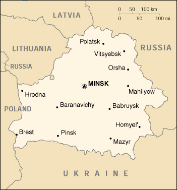

![[Country Flag of Belarus]](../flags/bo-lgflag.jpg)
| Belarus |
|
         |  | |
| Introduction |
Background: After seven decades as a constituent republic of the USSR, Belarus attained its independence in 1991. It has retained closer political and economic ties to Russia than any of the other former Soviet republics. Belarus and Russia signed a treaty on a two-state union on 8 December 1999 envisioning greater political and economic integration but, to date, neither side has actively sought to implement the accord.
| Geography |
Location: Eastern Europe, east of Poland
Geographic coordinates: 53 00 N, 28 00 E
Map references: Commonwealth of Independent States
Area:
total:
207,600 sq km
land:
207,600 sq km
water:
0 sq km
Area - comparative: slightly smaller than Kansas
Land boundaries:
total:
3,098 km
border countries:
Latvia 141 km, Lithuania 502 km, Poland 605 km, Russia 959 km, Ukraine 891 km
Coastline: 0 km (landlocked)
Maritime claims: none (landlocked)
Climate: cold winters, cool and moist summers; transitional between continental and maritime
Terrain: generally flat and contains much marshland
Elevation extremes:
lowest point:
Nyoman River 90 m
highest point:
Dzyarzhynskaya Hara 346 m
Natural resources: forests, peat deposits, small quantities of oil and natural gas
Land use:
arable land:
29%
permanent crops:
1%
permanent pastures:
15%
forests and woodland:
34%
other:
21% (1993 est.)
Irrigated land: 1,000 sq km (1993 est.)
Natural hazards: NA
Environment - current issues: soil pollution from pesticide use; southern part of the country contaminated with fallout from 1986 nuclear reactor accident at Chornobyl' in northern Ukraine
Environment - international agreements:
party to:
Air Pollution, Air Pollution-Nitrogen Oxides, Air Pollution-Sulphur 85, Biodiversity, Endangered Species, Environmental Modification, Hazardous Wastes, Marine Dumping, Nuclear Test Ban, Ozone Layer Protection, Ship Pollution, Wetlands
signed, but not ratified:
Climate Change, Law of the Sea
Geography - note: landlocked
| People |
Population: 10,366,719 (July 2000 est.)
Age structure:
0-14 years:
19% (male 982,959; female 942,062)
15-64 years:
68% (male 3,411,684; female 3,614,453)
65 years and over:
13% (male 466,929; female 948,632) (2000 est.)
Population growth rate: -0.17% (2000 est.)
Birth rate: 9.27 births/1,000 population (2000 est.)
Death rate: 13.96 deaths/1,000 population (2000 est.)
Net migration rate: 3.01 migrant(s)/1,000 population (2000 est.)
Sex ratio:
at birth:
1.05 male(s)/female
under 15 years:
1.04 male(s)/female
15-64 years:
0.94 male(s)/female
65 years and over:
0.49 male(s)/female
total population:
0.88 male(s)/female (2000 est.)
Infant mortality rate: 14.63 deaths/1,000 live births (2000 est.)
Life expectancy at birth:
total population:
68 years
male:
61.83 years
female:
74.48 years (2000 est.)
Total fertility rate: 1.25 children born/woman (2000 est.)
Nationality:
noun:
Belarusian(s)
adjective:
Belarusian
Ethnic groups: Byelorussian 77.9%, Russian 13.2%, Polish 4.1%, Ukrainian 2.9%, other 1.9%
Religions: Eastern Orthodox 80%, other (including Roman Catholic, Protestant, Jewish, and Muslim) 20% (1997 est.)
Languages: Byelorussian, Russian, other
Literacy:
definition:
age 15 and over can read and write
total population:
98%
male:
99%
female:
97% (1989 est.)
| Government |
Country name:
conventional long form:
Republic of Belarus
conventional short form:
Belarus
local long form:
Respublika Byelarus'
local short form:
none
former:
Belorussian (Byelorussian) Soviet Socialist Republic
Data code: BO
Government type: republic
Capital: Minsk
Administrative divisions:
6 voblastsi (singular - voblasts') and one municipality* (harady, singular - horad); Brestskaya (Brest), Homyel'skaya (Homyel'), Horad Minsk*, Hrodzyenskaya (Hrodna), Mahilyowskaya (Mahilyow), Minskaya, Vitsyebskaya (Vitsyebsk)
note:
voblasti have the administrative center name following in parentheses
Independence: 25 August 1991 (Belarusian Supreme Soviet declaration of independence from the Soviet Union)
National holiday: Independence Day, 3 July (1944); note - represents Minsk liberation from German occupation
Constitution: 30 March 1994; revised by national referendum of 24 November 1996 giving the presidency greatly expanded powers and became effective 27 November 1996
Legal system: based on civil law system
Suffrage: 18 years of age; universal
Executive branch:
chief of state:
President Aleksandr LUKASHENKO (since 20 July 1994)
head of government:
Prime Minister Sergey LING (acting since 18 November 1996, confirmed 19 February 1997); First Deputy Prime Minister Vasiliy DOLGOLEV (since 2 December 1998); Deputy Prime Ministers Vladimir ZAMETALIN (since 15 July 1997), Ural LATYPOV (since 30 December 1997), Gennadiy NOVITSKIY (since 11 February 1997), Leonid KOZIK (since 4 February 1997), Aleksandr POPKOV (since 10 November 1998)
cabinet:
Council of Ministers
elections:
president elected by popular vote for a five-year term; election last held 24 June and 10 July 1994 (next to be held NA; according to the 1994 constitution, the next election should have been held in 1999, however LUKASHENKO extended his term to 2001 via the November 1996 referendum); prime minister and deputy prime ministers appointed by the president
election results:
Aleksandr LUKASHENKO elected president; percent of vote - Aleksandr LUKASHENKO 85%, Vyacheslav KEBICH 15%
note:
first presidential elections took place in June-July 1994
Legislative branch:
bicameral Parliament or Natsionalnoye Sobranie consists of the Council of the Republic or Soviet Respubliki (64 seats; eight appointed by the president and 56 indirectly elected by deputies of local councils for four-year terms) and the Chamber of Representatives or Palata Pretsaviteley (110 seats; note - present members came from the former Supreme Soviet which LUKASHENKO disbanded in November 1996)
elections:
last held May and November-December 1995 (two rounds, each with a run-off; disbanded after the November 1996 referendum; next to be held NA)
election results:
after the November 1996 referendum, seats for the Chamber of Representatives were filled by former Supreme Soviet members as follows: PKB 24, Agrarian 14, Party of Peoples Concord 5, LDPB 1, UPNAZ 1, Green World Party 1, Belarusian Social Sports Party 1, Ecological Party 1, Republican Party of Labor and Justice 1, independents 61; 58 of the 64 seats in the Council of the Republic have been appointed/elected
Judicial branch: Supreme Court, judges are appointed by the president; Constitutional Court, half of the judges appointed by the president and half appointed by the Chamber of Representatives
Political parties and leaders: Agrarian Party [Aleksandr PAVLOV, acting chairman]; Belarusian Communist Party or KPB [Viktor CHIKIN, chairman]; Belarusian Green Party or BPZ [Mikalay KARTASH, chairman]; Belarusian Labor Party or BPP [Aleksandr BUKHVOSTOV, chairman]; Belarusian Patriotic Movement (Belarusian Patriotic Party) or BPR [Anatoliy BARANKEVICH, chairman]; Belarusian Popular Front or BNF [Vintsuk VYACHORKA, chairman]; Belarusian Social-Democrat or SDBP [Nikolay STATKEVICH, chairman]; Belarusian Social-Democratic Party Hramada [Stanislav SHUSHKEVICH, chairman]; Belarusian Social Sports Party or BSSP [Aleksandr ALEKSANDROVICH, chairman]; Belarusian Socialist Party [Vyacheslav KUZNETSOV]; Civic Accord Bloc (United Civic Party) or CAB [Stanislav BOGDANKEVICH, chairman]; Ecological Party or BEP [Liudmila YELIZAROVA, chairperson]; Liberal-Democratic Party or LDPB [Sergei GAYDUKEVICH, chairman]; Party of All-Belarusian Unity and Concord or UPNAZ [Dmitriy BULAKOV, chairman]; Party of Communists Belarusian or PKB [Sergei KALYAKIN, chairman]; Party of Popular Accord or PPA [Leanid SECHKA]; Republican Party of Labor and Justice or RPPS [Anatoliy NETYLKIN, chairman]; Women's Party Nadezhda [Valentina POLEVIKOVA, chairperson]
International organization participation: CCC, CEI, CIS, EAPC, EBRD, ECE, IAEA, IBRD, ICAO, ICRM, IFC, IFRCS, ILO, IMF, Inmarsat, Intelsat (nonsignatory user), Interpol, IOC, IOM (observer), ISO, ITU, NAM, OPCW, OSCE, PCA, PFP, UN, UNCTAD, UNESCO, UNIDO, UPU, WFTU, WHO, WIPO, WMO, WTrO (applicant)
Diplomatic representation in the US:
chief of mission:
Ambassador Valery TSEPAKO
chancery:
1619 New Hampshire Avenue NW, Washington, DC 20009
telephone:
[1] (202) 986-1604
FAX:
[1] (202) 986-1805
consulate(s) general:
New York
Diplomatic representation from the US:
chief of mission:
Ambassador Daniel V. SPECKHARD
embassy:
Starovilenskaya #46-220002, Minsk
mailing address:
use embassy street address
telephone:
[375] (17) 231-5000
FAX:
[375] (17) 234-7853
Flag description: red horizontal band (top) and green horizontal band one-half the width of the red band; a white vertical stripe on the hoist side bears the Belarusian national ornament in red
| Economy |
Economy - overview: Belarus has seen little structural reform since 1995, when President LUKASHENKO launched the country on the path of "market socialism." In keeping with this policy, LUKASHENKO re-imposed administrative controls over prices and currency exchange rates and expanded the state's right to intervene in the management of private enterprise. In addition to the burdens imposed by high inflation, businesses have been subject to pressure on the part of central and local governments, e.g., arbitrary changes in regulations, numerous rigorous inspections, and retroactive application of new business regulations prohibiting practices that had been legal. Further economic problems are two consecutive bad harvests, 1998-99, and persistent trade deficits. Close relations with Russia, possibly leading to reunion, color the pattern of economic developments. For the time being, Belarus remains self-isolated from the West and its open-market economies.
GDP: purchasing power parity - $55.2 billion (1999 est.)
GDP - real growth rate: 1.5% (1999 est.)
GDP - per capita: purchasing power parity - $5,300 (1999 est.)
GDP - composition by sector:
agriculture:
23%
industry:
28%
services:
49% (1998 est.)
Population below poverty line: 22% (1995 est.)
Household income or consumption by percentage share:
lowest 10%:
4.9%
highest 10%:
19.4% (1993)
Inflation rate (consumer prices): 295% (1999 est.)
Labor force: 4.3 million (1998)
Labor force - by occupation: industry and construction NA%, agriculture and forestry NA%, services NA%
Unemployment rate: 2.3% officially registered unemployed (December 1998); large number of underemployed workers
Budget:
revenues:
$4 billion
expenditures:
$4.1 billion, including capital expenditures of $180 million (1997 est.)
Industries: metal-cutting machine tools, tractors, trucks, earth movers, motorcycles, TV sets, chemical fibers, fertilizer, textiles, radios, refrigerators
Industrial production growth rate: 8% (1999 est.)
Electricity - production: 21.893 billion kWh (1998)
Electricity - production by source:
fossil fuel:
99.89%
hydro:
0.11%
nuclear:
0%
other:
0% (1998)
Electricity - consumption: 28.66 billion kWh (1998)
Electricity - exports: 2.3 billion kWh (1998)
Electricity - imports: 10.6 billion kWh (1998)
Agriculture - products: grain, potatoes, vegetables, sugar beets, flax; beef, milk
Exports: $6 billion (f.o.b., 1999)
Exports - commodities: machinery and equipment, chemicals, metals, textiles, foodstuffs
Exports - partners: Russia 66%, Ukraine, Poland, Germany, Lithuania (1998)
Imports: $6.4 billion (c.i.f., 1999)
Imports - commodities: mineral products, machinery and equipment, metals, chemicals, foodstuffs
Imports - partners: Russia 54%, Ukraine, Germany, Poland, Lithuania (1998)
Debt - external: $1.1 billion (1998 est.)
Economic aid - recipient: $194.3 million (1995)
Currency: Belarusian rubel (BR)
Exchange rates: Belarusian rubels per US$1 - 730,000 (15 December 1999), 139,000 (25 January 1999), 46,080 (2nd qtr 1998), 25,964 (1997), 15,500 (yearend 1996), 11,500 (yearend 1995)
Fiscal year: calendar year
| Communications |
Telephones - main lines in use: 2.537 million (1997)
Telephones - mobile cellular: 8,000 (1999)
Telephone system:
the Ministry of Telecommunications controls all telecommunications through its carrier (a joint stock company) Beltelcom which is a monopoly
domestic:
local - Minsk has a digital metropolitan network and a cellular NMT-450 network; waiting lists for telephones are long; local service outside Minsk is neglected and poor; intercity - Belarus has a partly developed fiber-optic backbone system presently serving at least 13 major cities (1998); Belarus's fiber optics form synchronous digital hierarchy rings through other countries' systems; an inadequate analog system remains operational
international:
Belarus is a member of the Trans-European Line (TEL), Trans-Asia-Europe Fiber-Optic Line (TAE) and has access to the Trans-Siberia Line (TSL); three fiber-optic segments provide connectivity to Latvia, Poland, Russia, and Ukraine; worldwide service is available to Belarus through this infrastructure; additional analog lines to Russia; Intelsat, Eutelsat, and Intersputnik earth stations
Radio broadcast stations: AM 28, FM 37, shortwave 11 (1998)
Radios: 3.02 million (1997)
Television broadcast stations: 17 (1997)
Televisions: 2.52 million (1997)
Internet Service Providers (ISPs): 1 (1999)
| Transportation |
Railways:
total:
5,563 km
broad gauge:
5,563 km 1.520-m gauge (894 km electrified)
Highways:
total:
63,355 km
paved:
60,567 km
unpaved:
2,788 km (1998 est.)
Waterways: NA km; note - Belarus has extensive and widely used canal and river systems
Pipelines: crude oil 1,470 km; refined products 1,100 km; natural gas 1,980 km (1992)
Ports and harbors: Mazyr
Airports: 118 (1996 est.)
Airports - with paved runways:
total:
36
over 3,047 m:
2
2,438 to 3,047 m:
18
1,524 to 2,437 m:
5
under 914 m:
11 (1996 est.)
Airports - with unpaved runways:
total:
82
over 3,047 m:
1
2,438 to 3,047 m:
6
1,524 to 2,437 m:
4
914 to 1,523 m:
9
under 914 m:
62 (1996 est.)
| Military |
Military branches: Army, Air Force, Air Defense Force, Interior Ministry Troops, Border Guards
Military manpower - military age: 18 years of age
Military manpower - availability:
males age 15-49:
2,714,420 (2000 est.)
Military manpower - fit for military service:
males age 15-49:
2,126,655 (2000 est.)
Military manpower - reaching military age annually:
males:
82,720 (2000 est.)
Military expenditures - dollar figure: $156 million (FY98)
Military expenditures - percent of GDP: 1.2% (FY98)
| Transnational Issues |
Disputes - international: none
Illicit drugs: limited cultivation of opium poppy and cannabis, mostly for the domestic market; transshipment point for illicit drugs to and via Russia, and to the Baltics and Western Europe